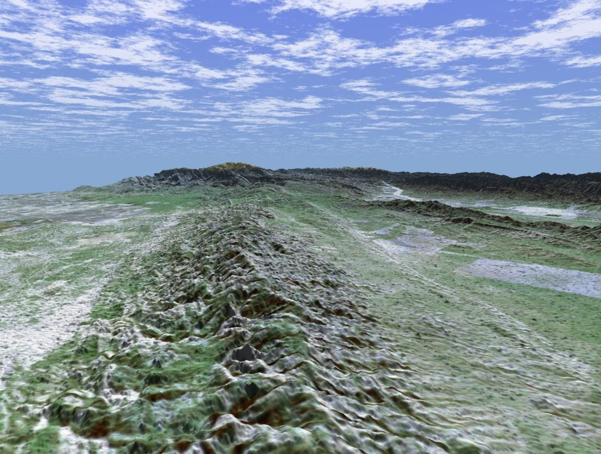

Part 4: Quakes, Resources and Time · Chapter 13 of 15
Earthquakes
Stored-up strain released in seconds.

Along a fault, the rocks on either side are pushed in different directions by plate movement, but friction holds them locked together. Strain builds up, sometimes for centuries, until the rock suddenly gives way. The two sides lurch past each other, and the stored energy radiates out as seismic waves. That sudden release is an earthquake.
Most earthquakes happen within the brittle upper crust, at depths of a few to a few tens of kilometres. Shallow earthquakes generally do the most damage. In subduction zones, earthquakes can happen down to about 700 km deep as the sinking plate breaks up.
Measuring earthquakes
Earthquakes are recorded by seismographs. Their size is given as a magnitude. Today scientists use the moment magnitude scale, which measures the total energy released. Each step of one whole number means about 32 times more energy. The largest earthquake ever recorded struck Chile in 1960, with a magnitude of 9.5.
Effects
Most damage comes from shaking that brings down buildings, and from landslides and fires. Earthquakes under the sea can lift or drop the sea floor and set off a tsunami, a series of waves that can cross whole oceans. The Indian Ocean tsunami of 2004, caused by a magnitude 9.1 earthquake off Sumatra, killed more than 200,000 people in fourteen countries.
Key terms
- tremor
- A small shaking of the ground.
- seismograph
- An instrument that detects and records earthquake waves.
- fault line
- The line on the surface where a fault, a break in the rock, can be seen.
- tsunami
- A massive sea wave caused by an earthquake or other sudden movement under the sea.
- landslide
- A sudden fall of rock and soil down a slope.
- brittle
- Hard but easily broken or cracked, rather than bending.
- strain
- The build-up of stress in rocks that are locked together, until they break.
Check your understanding
Think of your answer, then open each question to compare.
What actually happens in an earthquake?
Rocks locked together on a fault slip suddenly, releasing built-up strain as seismic waves.
How much more energy does a magnitude 7 earthquake release than a magnitude 6?
About 32 times more.
How can an earthquake cause a tsunami?
Sudden movement of the sea floor displaces the water above it, creating waves that spread across the ocean.